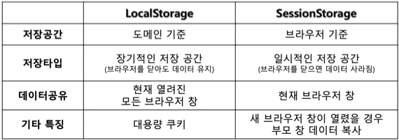
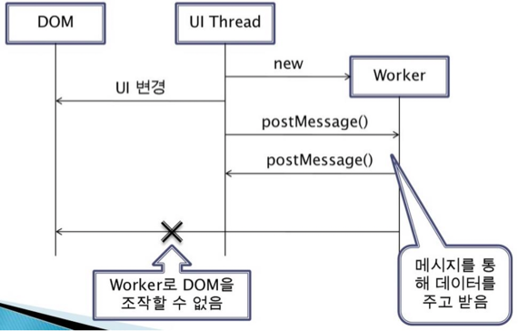
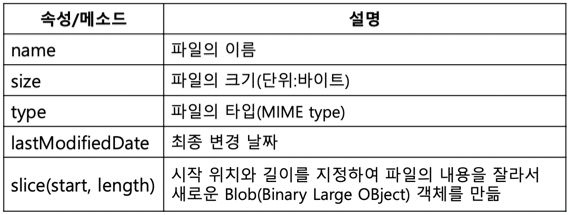
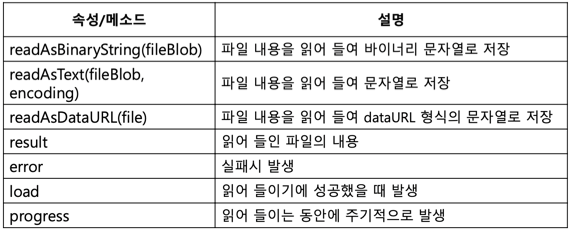
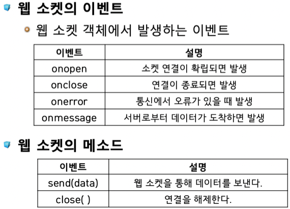
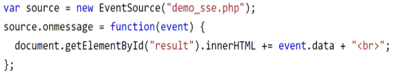
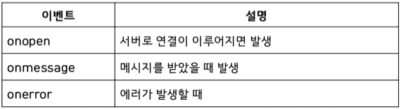

충남대학교 컴퓨터공학과 이규철 교수님의 "웹 프로그래밍" 강의를 필기한 내용입니다.
다소 잘못된 내용과 구어적 표현 이 포함되어 있을 수 있습니다.
Drag & Drop
Overview
Element to drag
- 태그의
draggable속성이true로 되어있어야 함 :<tag draggable="true"> ongradstart속성에 드래그를 시작할때 호출할 함수를 입력하여 드래그하려는 놈의 id를Event.dataTransfer에 저장함
<script>
function _func(event) {
event.dataTransfer.setData("text", #id);
}
</script>
<tag ondragstart="_func(event)">Element for drop
- 드래그된놈이 위에 있을때
ondragoverevent가 계속 발생하고 그때마다 드래그를 허용해줘야됨- 이건
Event.preventDefault()로 가능함
- 이건
<script>
function _func(event) {
event.preventDefault();
}
</script>
<tag ondragover="_func(event)">- 드롭되었을때
ondropevent가 발생하고 이때Event.dataTransfer에 저장한 정보를 갖고옴
<script>
function _func(event) {
event.preventDefault();
const _id = event.dataTransfer.getData("text");
event.target.appendChild(document.getElementById(_id));
}
</script>
<tag ondrop="_func(event)">Example
Web storage
Overview
- Cookie는 작은 데이터를 저장하고 서버로 Request를 날릴때 같이 날라감

- WebStorage는 많은 데이터를 저장하고 서버로 날라가지 않음
- LocalStorage는 도메인 기준으로 데이터가 저장되고 브라우저를 닫아도 없어지지 않아 장기적인 데이터 보관을 위한 것
- SessionStorage는 세션(탭)기준으로 데이터가 저장되고 탭을 닫으면 없어져 단기적인 데이터 보관을 위한 것
Usage
- 일단 브라우저가 Storage를 지원하는지 체크
if(typeof(Storage) !== "undefined") { /* ... */ }- 값 저장
window.localStorage.setItem("key", "value");
window.sessionStorage.setItem("key", "value");- 값 조회
window.localStorage.getItem("key");
window.sessionStorage.getItem("key");- 값 삭제
window.localStorage.removeItem("key");
window.sessionStorage.removeItem("key");- 값 전부 삭제
window.localStorage.clear();
window.sessionStorage.clear();Example
Web worker
Overview
- 시간이 오래걸리는 작업을 백그라운드로 돌리는 것

- DOM을 조작해 UI를 변경하는 것을 직접적으로 할 수 없음
- UI Thread로 보내 거기서 조작하도록 해야 한다
- 전용 워커(Dedicated worker) 는 워커를 생성한 페이지에서만 돌아가는 것
- 공유 워커(Shared worker) 는 페이지와 무관하게 돌아가는 것
Usage
- Worker 인스턴스를 담을 전역변수 선언
var w;- 일단 브라우저가 Worker를 지원하는지 체크
if(typeof(Worker) !== "undefined") { /* ... */ }- 워커 객체 생성
if(typeof(w) !== undefined) {
w = new Worker("path-to-js-file.js")
}- 워커에서 값을 보낼때는
postMessage()를 사용
postMessage("data-to-send");- UI Thread에서 받았을때는 onmessage event가 발생함
w.onmessage = (event) => { console.log(event.data); }- Worker 종료시키기
w.terminate();
w = undefined;Example
Geolocation
Overview
- 브라우저가 지원하는지 확인
if(navigator.geolocation) { /* ... */ }- 현재위치 한번 받아오기
navigator.geolocation.getCurrentPosition((position) => {
console.log(position.coords.latitude);
console.log(position.coords.longitude);
});- 현재위치 주기적으로 받아오기
navigator.geolocation.watchPosition((position) => {
console.log(position.coords.latitude);
console.log(position.coords.longitude);
});- 주기적으로 받아오는기 취소
navigator.geolocation.clearWatch();Example
File
Overview
- 파일을 수정할 수는 없고 오직 읽기만 가능
Document
File

FileReader

Editable
Overview
- 특정 요소에 text를 적을 수 있게 해줌
Usage
<tag contenteditable>요소 하나를 편집 가능하도록 만들기- 페이지 전체를 편집 가능하도록 만들기
window.onload = () => {
document.designMode = "on";
}- 텍스트 입력 모드 바꾸기
// 앞으로 입력되는 글자를 굵게 표시
document.execCommand("bold");Document
Web socket
Overview
- 웹 소켓은 http를 이용하는 것이 아닌 ws를 이용하여 서버로 데이터를 주고받는 프로토콜
- 실시간 양방향 통신을 위한 것 - 채팅어플만들때 많이 이용한댄다
Usage
- 객체 생성
const soc = new WebSocket("address-to-server");- 송신
soc.send("data-to send");- 수신
ws.onmessage = (event) => {
console.log(event.data);
};Document

Example
Server Sent Event
- SetInterval같은거 안쓰고 일정 시간간격을 두고 계속 Request를 보내서 값을 가져오는 방법
- Event Source라는 객체를 이용

- 이렇게 하면 되고

- 이런 이벤트들이 있댄다